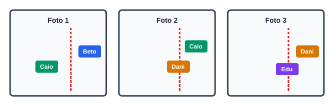

Autoavaliação 2.2.1. A Ordem de Chegada da Corrida.
- Beto, Caio, Dani, Edu
- Correto! Beto cruzou na foto 1, Caio completou em seguida na foto 2, Dani cruzou logo após e Edu finalizou na foto 3.
- Caio, Beto, Dani, Edu
- Incorreto. Na foto 1, Beto já havia ultrapassado a linha enquanto Caio ainda se aproximava.
- Beto, Dani, Caio, Edu
- Incorreto. Caio já cruzou a linha antes de Dani finalizar.
- Dani, Beto, Caio, Edu
- Incorreto. Dani só cruzou a linha após Beto e Caio.
- Beto, Caio, Edu, Dani
- Incorreto. Na foto 3, Dani já está além da linha de chegada enquanto Edu está cruzando.
Três fotografias tiradas em instantes sucessivos mostram quatro ciclistas (Beto, Caio, Dani e Edu) ultrapassando a linha de chegada de uma prova esportiva.

Qual foi a ordem cronológica exata em que os quatro atletas completaram a corrida?
Dica 1.
Dica 2.
Solução.
Pista 1 (Pista Leve): Olhe para a Foto 1: quem já cruzou a linha tracejada vermelha? Esse atleta é garantidamente o 1º colocado.
Pista 2 (Pista Forte): Na Foto 1, Beto já cruzou e Caio está quase cruzando. Na Foto 2, Caio já cruzou e Dani está sobre a linha. Na Foto 3, Dani já cruzou e Edu está chegando.
1. Análise Temporal Foto a Foto:
- Foto 1: Beto já está completamente à direita da linha de chegada (já concluiu a prova em 1º lugar). Caio está à esquerda, aproximando-se da linha.
- Foto 2: Caio já ultrapassou a linha de chegada (concluindo em 2º lugar). Dani está exatamente sobre a linha, no ato de cruzar. Edu ainda não apareceu.
- Foto 3: Dani já ultrapassou a linha de chegada (3º lugar). Edu está cruzando a linha de chegada (4º lugar).
Portanto, a ordem cronológica rigorosa de chegada é Beto, Caio, Dani e Edu.